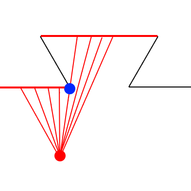
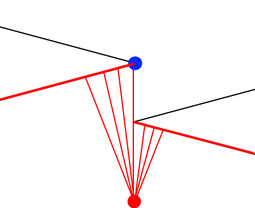
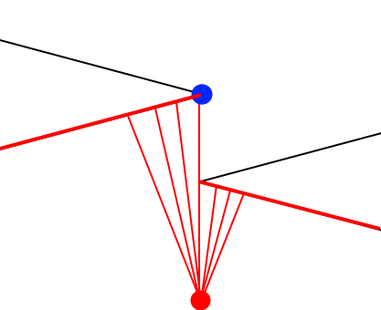
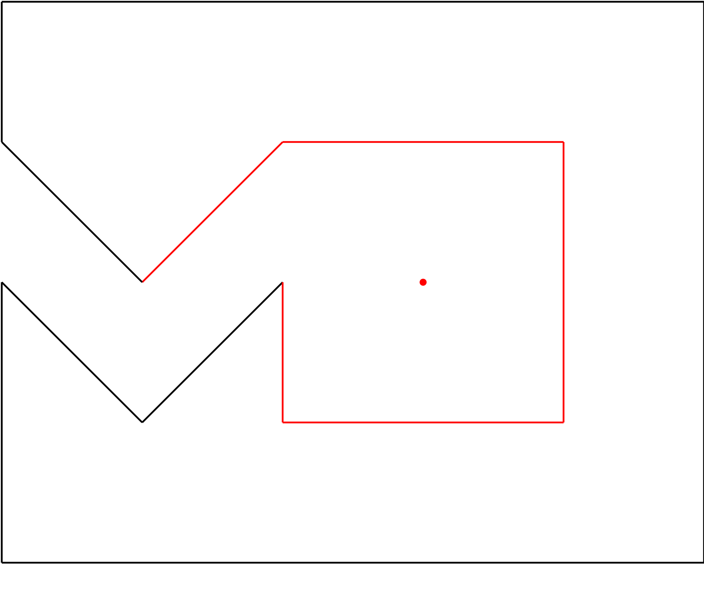
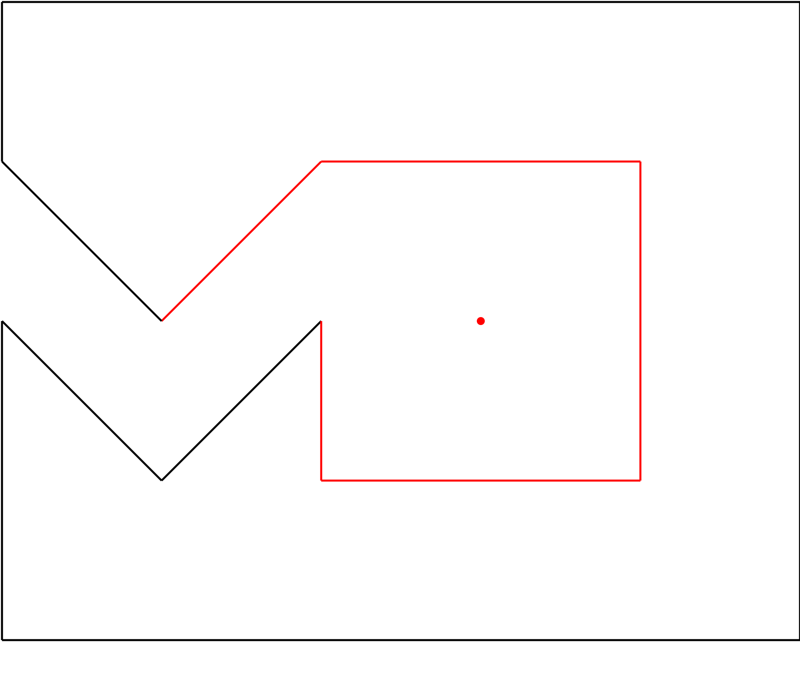

This is originally from the USA Computing Olympiad. The problem, "Closed Fences" (nicknamed "fence4") is as follows:
A closed fence in the plane is a set of non-crossing, connected line segments with N corners. The corners are each distinct and are listed in counter-clockwise order.
Every pair of adjacent vertices defines a side of the fence. Thus {$ x_i y_i \space x_{i+1} y_{i+1}$} is a side of the fence for all $i$ in (1..N). For our purposes, N+1 = 1, so that the first and last vertices making the fence closed.
Here is a typical closed fence and a point $(x,y)$:
Write a program which will do the following to find the set of fence sides that a person (with no height) who is standing in the plane at position $ (x,y) $ can "see" when looking at the fence. The location $ (x,y) $ may fall anywhere not on the fence.
A fence side can be seen if there exists a ray that connects $ (x,y) $ and any point on the side, and the ray does not intersect any other side of the fence. A side that is parallel to the line of sight is not considered visible. In the figure, above the segments $(x_3,y_3)-(x_4,y_4)$; $(x_5,y_5)-(x_6,y_6)$; and $(x_6-y_6)-(x_1,y_1)$ are visible or partially visible from $(x,y)$.
The original problem can be found here.
Problems in coordinate-geometry tend to be fiddly due to a large number of
corner cases - so let's be careful!
Consider the eye to be a Laser sweeping around. It is only at points
that a transition can occur between sides that the laser is hitting.
i.e. in the image below the blue point is passed through when the laser (in red)
changes sides.

With the above in mind we only need check the behavior of the laser around
points.
Case of complete intersection:
(Dotted line is not visible)
 Case of partial intersection:

Case of partial intersection:

This suggests we should consider the left and the right of the laser (eye-line) differently. On the LHS of the laser the visible line is the intersection closest to the eye, with angle between the line and the laser smallest and similarly on the RHS.
In pseudo-code:
for each point in fence:
# Make an eye-line (or laser line)
eye_line = Line(eye, point)
# Separate points on the LHS and RHS of the eye-line
LHS = []
RHS = []
for each line in fence:
intersection = find_intersection(eye_line, line)
angle = find_angle(eye_line, line)
distance_from_eye = find_distance(eye, intersection)
if intersection is a TotalIntersection:
# This blocks both LHS and RHS
LHS.add(line, distance_from_eye, angle)
RHS.add(line, distance_from_eye, angle)
else if line is on LHS:
LHS.add(line, distance_from_eye, angle)
else if line is on RHS:
RHS.add(line, distance_from_eye, angle)
# Sort LHS and RHS to find what the eye sees first.
# i.e. by distance then angle
left.sort()
right.sort()
# Mark the first line in LHS and the first line in RHS as
# visible.
if LHS:
mark_visible(LHS.first_line)
if RHS:
mark_visible(RHS.first_line)
return visible_counts
Let's start by defining Point class with some useful helper methods to help us with vector algebra. It's important not to use any floating-point logic at any point since this will introduce rounding errors. We use the built-in Fraction class.
class Point(object):
"""
Cartesian 2D point class.
"""
# Immutable, so use __new__ (not __init__)
def __new__(cls, x, y):
self = super(Point, cls).__new__(cls)
self.x, self.y = x, y
return self
def __add__(self, other):
return Point(self.x + other.x, self.y + other.y)
def __sub__(self, other):
return Point(self.x - other.x, self.y - other.y)
def __mul__(self, scalar):
if isinstance(scalar, (int, Fraction)):
return Point(scalar * self.x, scalar * self.y)
return NotImplemented
def __rmul__(self, other):
return self.__mul__(other)
We can now define a line Class, between two points.
class Line(object):
"""
Cartesian 2D line class.
"""
def __new__(cls, start, end):
self = super(Line, cls).__new__(cls)
self.start, self.end = start, end
return self
def __contains__(self, point):
"""
Check if the point is on the the line.
"""
n = point - self.start
d = self.end - self.start
# First check if point is on infinite line
if n.x * d.y == n.y * d.x:
# Now check if it's on the segment
if n.x == d.x or n.x // d.x == 0:
return True
return False
Define the intersection method. There are a few cases so we need to be slightly careful.
@staticmethod
def intersect_extended(l1, l2):
"""
Given two lines - their intersection type.
(INTERSECT_AS_SUBSET | INTERSECT | NO_INTERSECT)
If intersection return the t, s values (fractional).
"""
a = (l1.end - l1.start).x
b = (l2.start - l2.end).x
c = (l1.end - l1.start).y
d = (l2.start - l2.end).y
det = a * d - b * c
if det == 0:
if (l2.start in l1) or (l2.end in l1):
# Subset
return INTERSECT_AS_SUBSET, 0, 0
else:
# Parallel
return NO_INTERSECT, 0, 0
q = (l2.start - l1.start).x
r = (l2.start - l1.start).y
t = Fraction((d * q - b * r), det)
s = Fraction((-c * q + a * r), det)
return INTERSECT, t, s
And finally the main logic - this is very similar to the pseudo code. Note: we don't actually explicitly compute the angle between the two lines since this would involve computing $\arccos{x}$ and also computing a square root i.e. $\cos{\theta} = \frac{a \cdot b}{|a||b|}$.
Instead we use the fact that $\cos{x}$ reverses the order and then we square both sides to avoid the square root.
def get_angle(l1, l2):
# This isn't actually the line-angle but is equivalent for ordering
# purposes.
dot = Line.dot_prod(l1, l2)
dot_sign = cmp(dot, 0)
return dot_sign * Fraction(dot**2, Line.dot_prod(l1, l1)
* Line.dot_prod(l2, l2))
def get_side(self, point):
"""
Output -1, 0, +1 depending on the side of the line
that the point lies.
"""
d = (self.start - self.end).y * (point - self.start).x + \
(self.end - self.start).x * (point - self.start).y
return cmp(d, 0) # signum(d)
def visible_sides(eye, point_list):
"""
Given a point. Determine the fences that are (fully or partially)
visible from here.
"""
N = len(point_list)
lines = [Line(point_list[i], point_list[(i + 1) % N]) for i in range(N)]
visible_counts = [False for _ in range(N)]
for point in point_list:
eye_line = Line(eye, point)
# Create two groups of lines: right/right of the eye-line
# Lines which completely intersect the eye-line (0= 0 and (0<=t<=1):
# Case 1: Line completely intersects eye-line
if 0 < t < 1:
# No angle required because fence does not intersect
left.append((s, 0, line_i))
right.append((s, 0, line_i))
# Case 2: Eye-line touches a corner
else:
# t == 0 or t==1
if t == 1:
line = line.reverse()
side = Line.get_side(eye_line, line.end)
line_angle = Line.get_angle(eye_line, line)
if side == +1:
left.append((s, line_angle, line_i))
elif side == -1:
right.append((s, line_angle, line_i))
# Sort left and right to find what the eye sees first.
left.sort()
right.sort()
if left:
s, line_angle, line_i = left[0]
visible_counts[line_i] = True
if right:
s, line_angle, line_i = right[0]
visible_counts[line_i] = True
return visible_counts
Full code available here with tests here.
Some more examples of the algorithm below. Eye (blue dot), visible sides (green).
 
